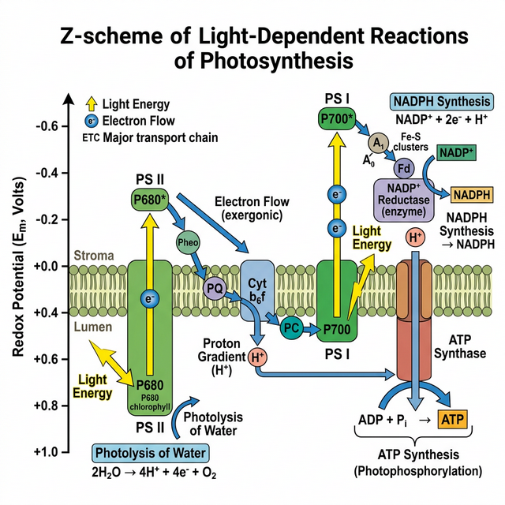

Chapter 11: Photosynthesis in Higher Plants
All animals including human beings depend on plants for their food. Have you ever wondered from where plants get their food? Green plants, in fact, have to make or rather synthesise the food they need and all other organisms depend on them for their needs. The green plants make or rather synthesise the food they need through photosynthesis and are therefore called autotrophs.
Photosynthesis is a physico-chemical process by which they use light energy to drive the synthesis of organic compounds. Ultimately, all living forms on earth depend on sunlight for energy.
Where does Photosynthesis take place?
You would of course answer: in ‘the green leaf’ or ‘in the chloroplasts’. Photosynthesis does take place in the green leaves of plants but it does so also in other green parts of the plants. The mesophyll cells in the leaves, have a large number of chloroplasts. Usually the chloroplasts align themselves along the walls of the mesophyll cells, such that they get the optimum quantity of the incident light.
Within the chloroplast there is a membranous system consisting of grana, the stroma lamellae, and the matrix stroma.
- Membrane system: Responsible for trapping the light energy and also for the synthesis of ATP and NADPH (Light Reactions).
- Stroma: Enzymatic reactions synthesise sugar, which in turn forms starch (Dark Reactions).

Figure 11.1: Z scheme of light reaction showing Electron Transport
Light Reaction
Light reactions or the ‘Photochemical’ phase include light absorption, water splitting, oxygen release, and the formation of high-energy chemical intermediates, ATP and NADPH.
- Electron Transport (Z-Scheme): In Photosystem II (PS II) the reaction centre chlorophyll a absorbs 680 nm wavelength of red light causing electrons to become excited and jump into an orbit farther from the atomic nucleus. These are picked up by an electron acceptor which passes them to an electrons transport system consisting of cytochromes. The electrons are passed onto PS I. Simultaneously, electrons in the reaction centre of PS I are also excited when they receive red light of wavelength 700 nm.
- Splitting of Water: The electrons that were moved from PS II must be replaced. This is achieved by electrons available due to splitting of water: $2H\sb{2}O \rightarrow 4H^+ + O\sb{2} + 4e^-$.
Dark Reaction (Biosynthetic Phase)
This process does not directly depend on the presence of light but is dependent on the products of the light reaction, i.e., ATP and NADPH.
- $C\sb{3}$ Pathway (Calvin Cycle): Occurs in three stages: Carboxylation of RuBP by RuBisCO, Reduction of 3-PGA to triose phosphate, and Regeneration of RuBP.
- $C\sb{4}$ Pathway: Plants growing in dry tropical regions use this pathway. It involves two cell types: Mesophyll and Bundle Sheath cells. Primary $CO\sb{2}$ acceptor is PEP (Phosphoenolpyruvate) catalyzed by PEPcase, forming a 4-carbon compound (OAA). It avoids photorespiration.
Competency Based Questions (Previous Years & Sample Papers)
Q1. The energy required to excite an electron in a chlorophyll molecule is given by the Planck-Einstein relation: $E = \frac{hc}{\lambda}$, where $h$ is Planck’s constant, $c$ is the speed of light, and $\lambda$ is the wavelength of the photon. Photosystem I (PS I) has a distinct absorption peak at $700 \text{ nm}$, while Photosystem II (PS II) peaks at $680 \text{ nm}$. Compare equations for $E\sb{PSI}$ and $E\sb{PSII}$. Which photosystem requires higher energy photons to excite its reaction center? Explain structurally why this slight energy difference is crucial for the unidirectional Z-scheme of non-cyclic photophosphorylation.
Answer
Mathematical Comparison: Energy for PS I: $E\sb{PSI} = \frac{hc}{700 \text{ nm}}$ Energy for PS II: $E\sb{PSII} = \frac{hc}{680 \text{ nm}}$
Since energy ($E$) is inversely proportional to wavelength ($\lambda$), the photon with the smaller wavelength carries more energy. Therefore: $\frac{hc}{680} > \frac{hc}{700}$, meaning $E\sb{PSII} > E\sb{PSI}$. PS II requires higher energy photons.
Biological/Structural Justification: The Z-scheme functions as a thermodynamic “downhill-uphill-downhill” energy gradient. PS II must act first to split water (a very thermodynamically demanding process that requires an extremely strong oxidant $P680^+$). By using a slightly higher energy photon ($680$ nm), PS II generates an excited electron ($P680^*$) with enough potential energy to “fall down” an electron transport chain (via plastoquinone and cytochrome $b\sb{6}f$) to reach PS I, synthesizing ATP along the way. When the electron reaches PS I, it has lost energy. PS I then uses a slightly lower energy photon ($700$ nm) to re-excite this electron to a high enough redox potential to reduce $NADP^+$ to $NADPH$. The energy difference prevents back-flow and perfectly matches the split-water/reduce-NADP end goals.
Q2. During the Calvin cycle ($C\sb{3}$ pathway), the fixation of $6$ molecules of $CO\sb{2}$ to generate one molecule of glucose requires an input of both ATP and NADPH. Let the stoichiometric ratio of $ATP:NADPH$ required per $CO\sb{2}$ fixed be denoted as $R\sb{C3}$. For a $C\sb{4}$ plant (like Sugarcane), the spatial separation of initial fixation and the Calvin cycle imposes an additional energetic cost of 2 ATP per $CO\sb{2}$ to regenerate PEP in the mesophyll cells. Calculate the ratio $R\sb{C3}$ for the $C\sb{3}$ pathway, and then calculate the total ATP required to synthesize one molecule of glucose in a $C\sb{3}$ plant versus a $C\sb{4}$ plant.
Answer
For a $C_3$ plant (Calvin Cycle alone): To fix one molecule of $CO_2$:
- Reduction step requires 2 ATP and 2 NADPH.
- Regeneration step requires 1 ATP. Total per $CO\sb{2}$: 3 ATP and 2 NADPH. The ratio $R\sb{C3}$ ($ATP:NADPH$) is $3:2$ (or $1.5$).
To synthesize one glucose ($6$ $CO_2$ molecules):
- ATP required = $6 \cdot 3$ = 18 ATP (for a $C_3$ plant).
- (NADPH required = $6 \cdot 2 = 12$ NADPH).
For a $C_4$ plant: The inner bundle sheath cells still run the standard Calvin cycle (costing 18 ATP and 12 NADPH for 6 $CO_2$). However, the initial $C_4$ prep-cycle in the mesophyll costs an additional 2 ATP per $CO_2$ to convert pyruvate back into Phosphoenolpyruvate (PEP).
- Additional ATP cost = $6 \text{ } CO_2 \cdot 2 \text{ ATP} = 12 \text{ ATP}$. Total ATP required to synthesize one glucose in a $C_4$ plant = $18 \text{ (Calvin)} + 12 \text{ (PEP regeneration)}$ = 30 ATP.
(Note: While $C_4$ plants use more total ATP, they are overwhelmingly more efficient in hot, arid conditions because pumping the $CO_2$ eliminates the massive energy waste of photorespiration caused by RuBisCO’s oxygenase activity).
Q3. According to the Chemiosmotic Hypothesis, ATP synthesis in chloroplasts is driven by a proton ($H^+$) gradient established across the thylakoid membrane. If the internal thylakoid lumen has a pH of $4.0$ under active illumination, and the surrounding stroma has a pH of $8.0$, calculate the concentration gradient of protons $[H^+]\sb{lumen} / [H^+]\sb{stroma}$. Based on the $\Delta pH$, explain how the ATP synthase enzyme utilizes this specific gradient.
Answer
Mathematical Calculation: The definition of pH is log scale: $\text{pH} = -\log_{10}[H^+]$, so $[H^+] = 10^{-\text{pH}}$.
Proton concentration in the lumen: $[H^+]\sb{lumen} = 10^{-4} \text{ M}$ Proton concentration in the stroma: $[H^+]\sb{stroma} = 10^{-8} \text{ M}$
Ratio: $$ \frac{[H^+]\sb{lumen}}{[H^+]\sb{stroma}} = \frac{10^{-4}}{10^{-8}} = 10^{(-4 - (-8))} = 10^4 = 10,000 $$
The proton concentration inside the thylakoid lumen is 10,000 times greater than in the stroma.
Biological Explanation: This massive 10,000-fold concentration difference establishes a very strong proton motive force (electrochemical gradient). The thylakoid membrane is impermeable to protons, forcing the trapped protons to seek equilibrium by exiting the lumen exclusively through the $CF_0$ transmembrane channel of the ATP synthase enzyme. As protons physically flow down their massive concentration gradient through the $CF_0$ channel, the resulting kinetic/conformational energy causes the $CF_1$ head piece (located in the stroma) to undergo rotational conformational changes. This mechanical energy is harnessed to forcefully catalyze the bonding of ADP and Pi, synthesizing ATP in the stroma where it is immediately used for the Calvin cycle.